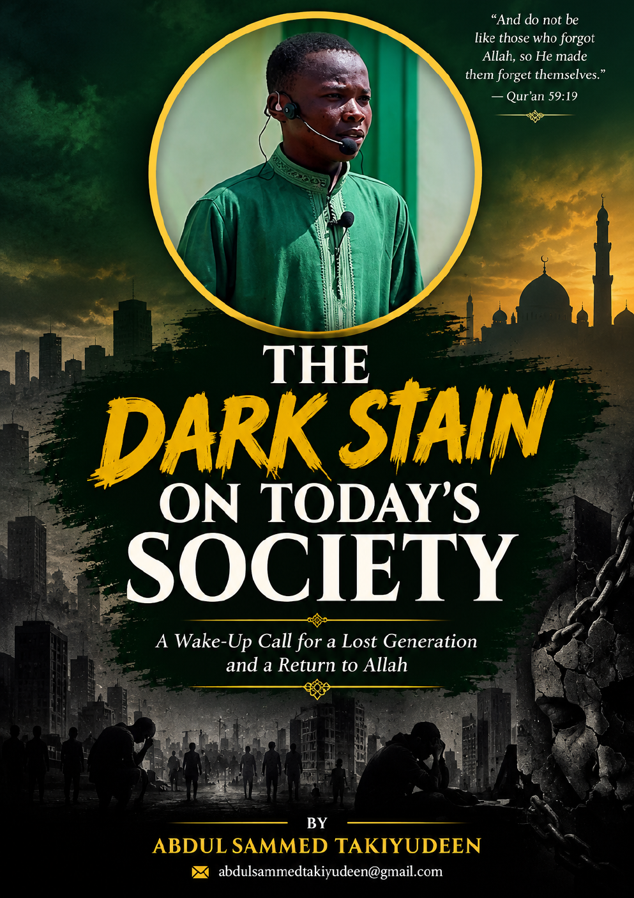

CHAPTER 1
A Society Losing Its Way
2.
✦

A WAKE-UP CALL FOR A LOST GENERATION
A simple-language Islamic reflection on the moral challenges of modern society, the pressures facing young people and families, and the hope of returning to Allah.
abdulsammedtakiyudeen@gmail.com
Before you point at the darkness around you, ask whether you are carrying a light.
Every generation has problems. This book asks difficult questions about the direction of society: What happens when people become more connected but less caring? What happens when popularity becomes more important than character? What happens when money becomes more important than honesty?
These pages are written in simple language so the message can be understood by everyone. The goal is not only to make you read. It is to make you think, feel and act.
Choose a chapter, or search for a word or idea.
2.
3.
4.
5.
6.
7.
8.
9.
10.
11.
12.
13.
14.
15.
A FINAL REMINDER
A heart can return. A family can heal. A young person can change. A community can rise. A society can awaken.
Do not merely read about the dark stain. Become part of the light that removes it.
Get the Complete PDFThis book is a reflective Islamic work intended to encourage self-examination, repentance, good character and positive reform.
abdulsammedtakiyudeen@gmail.com